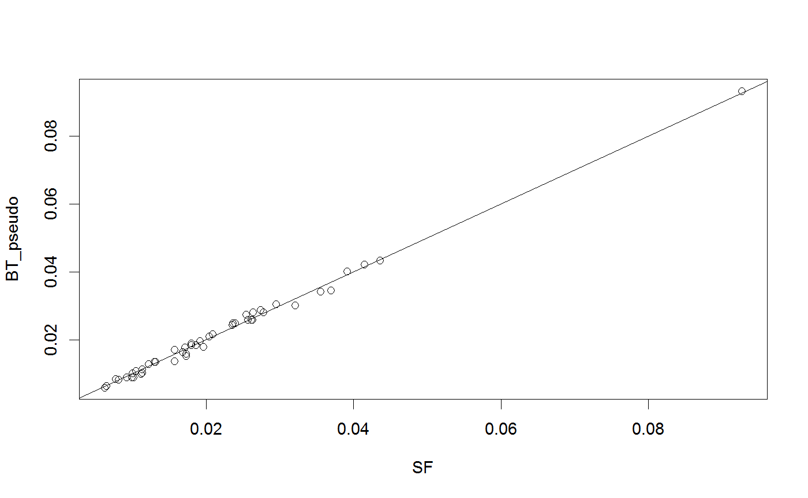

Allows fitting BradleyTerry() models with parameters equal to damped Scroogefactor()s.
pseudocount(X, alpha = 0.85)
| X | a square matrix of paired comparison data |
|---|---|
| alpha | a damping factor between 0 and 1 |
a matrix in the same form as X, with pseudocounts added
Eigenvector estimators can be used to compute Bradley--Terry scores.
But a damped PageRank uses a modified probability transition matrix dependent on a parameter, alpha.
Other Bradley-Terry model utility functions: BradleyTerry,
hessianBT, loglikelihood,
vcovBT
SF <- Scroogefactor(citations, alpha = 0.85) citations_pseudo <- pseudocount(citations) BT_pseudo <- BTscores(citations_pseudo) plot(SF, BT_pseudo); abline(0, 1)